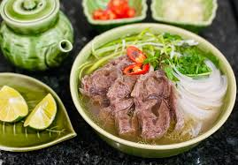

Giới Thiệu
Phở là một món ăn truyền thống của Việt Nam, thường được phục vụ vào buổi sáng. Đây là một món ăn bao gồm nước dùng trong, bánh phở (một loại sợi bún) và thịt, thường là thịt bò hoặc thịt gà. Phở được ăn kèm với rau sống, chanh và gia vị.
Hình Ảnh về Món Phở
Các Nguyên Liệu
- Bánh phở
- Nước dùng (xương bò, gia vị)
- Thịt bò hoặc gà
- Hành lá, ngò rí
- Rau sống (giá đỗ, húng quế, chanh)
- Gia vị (muối, tiêu, mắm, ớt)
Tham Khảo Thêm
Bạn có thể tìm hiểu thêm về phở tại Wikipedia.